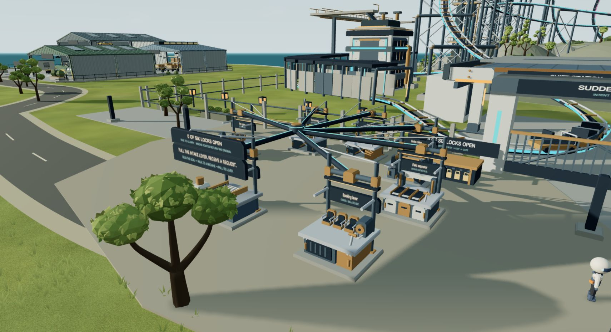
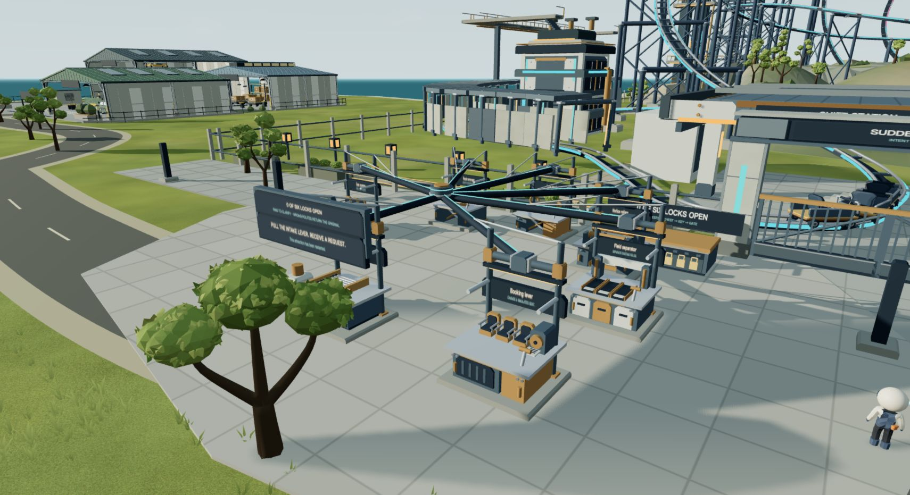
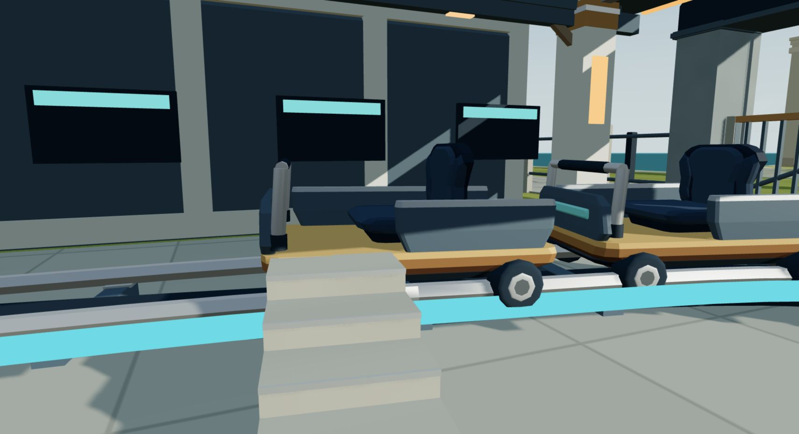
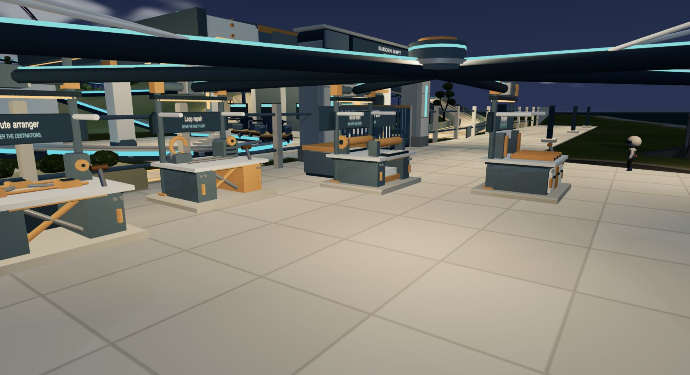
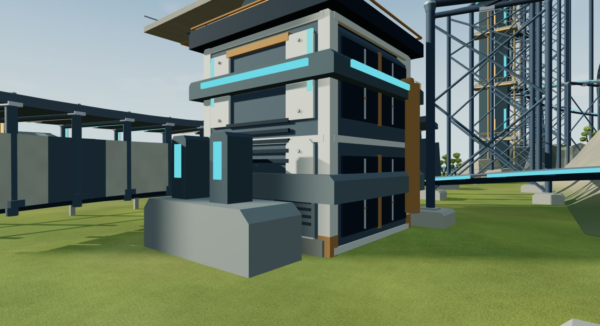
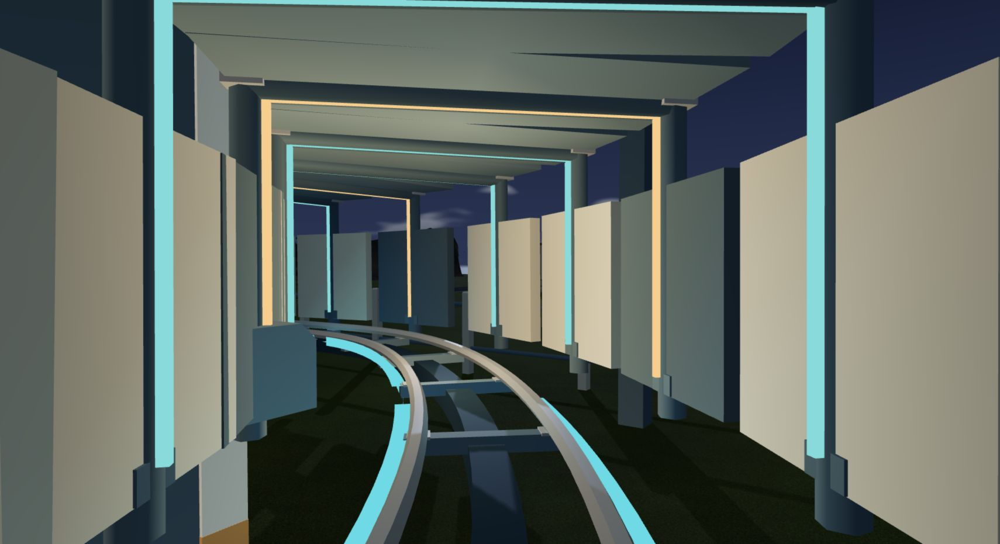

<!doctype html>
<html lang="zh-CN">
<meta charset="utf-8">
<meta name="viewport" content="width=device-width,initial-scale=1">
<title>意图过山车 · 本轮精修对照</title>
<style>
*{box-sizing:border-box}body{margin:0;background:#111d22;color:#e8eeed;font:15px/1.6 system-ui,sans-serif}main{max-width:1480px;margin:auto;padding:28px 24px}h1{font-size:26px;font-weight:550;margin:0 0 6px}p{margin:0;color:#acbdc0}header{margin-bottom:24px}.toolbar{display:flex;gap:24px;flex-wrap:wrap;align-items:center;margin-bottom:16px}.choices{display:flex;gap:6px;flex-wrap:wrap}button{font:inherit;color:inherit;background:#20343d;border:1px solid #47616b;border-radius:6px;padding:7px 14px;cursor:pointer}button[aria-pressed=true]{background:#d5af65;color:#14232a;border-color:#d5af65}button:focus-visible,input:focus-visible{outline:3px solid #61dae2;outline-offset:3px}.labels{display:flex;justify-content:space-between;font-size:13px;color:#bccaca;margin-bottom:8px}.comparison{position:relative;aspect-ratio:1710/931;overflow:hidden;border:1px solid #50636a;border-radius:8px;background:#19292f}.comparison img{position:absolute;width:100%;height:100%;object-fit:contain}.comparison .after{clip-path:inset(0 0 0 var(--split,50%))}.divider{position:absolute;inset:0 auto 0 var(--split,50%);width:2px;background:#f7e0af;pointer-events:none}.divider:after{content:'↔';position:absolute;top:49%;left:-19px;width:40px;height:40px;border-radius:50%;text-align:center;line-height:40px;background:#f7e0af;color:#14232a;font-size:23px;box-shadow:0 2px 10px #0006}.slider{display:flex;gap:12px;align-items:center;margin:14px 0 28px;color:#acbdc0;font-size:13px}.slider input{flex:1;accent-color:#d5af65}.details{margin-top:30px;display:grid;grid-template-columns:repeat(2,minmax(0,1fr));gap:20px}figure{margin:0}figure img{width:100%;display:block;border-radius:6px}figcaption{padding-top:7px;color:#bacaca}footer{margin-top:24px;color:#9cafb3;font-size:13px}a{color:#82d6dc}@media(max-width:700px){main{padding:18px 12px}.details{grid-template-columns:1fr}.toolbar{gap:12px}h1{font-size:22px}button{padding:5px 9px}.labels{font-size:11px}}
</style>
<main>
<header><h1>意图过山车 · 整场精修</h1><p>同机位、同画幅、同曝光。拖动分界线看变化。</p></header>
<div class="toolbar">
 <div class="choices" aria-label="对照位置">
  <button data-scene="workshop" aria-pressed="true">工坊</button><button data-scene="station" aria-pressed="false">站台</button><button data-scene="overview" aria-pressed="false">全景</button><button data-scene="short-bay" aria-pressed="false">轨道</button><button data-scene="lookout" aria-pressed="false">观景台</button>
 </div>
 <div class="choices" aria-label="时间"><button data-time="day" aria-pressed="true">正午</button><button data-time="night" aria-pressed="false">午夜</button></div>
</div>
<div class="labels"><span>制作前 · 9c23282</span><span>本轮完成 · 45ce8e4</span></div>
<div class="comparison" id="comparison"><div class="divider"></div></div>
<label class="slider">旧版<input id="split" type="range" min="0" max="100" value="50" aria-label="前后对照分界线">新版</label>
<div class="details">
 <figure><a href="candidate-train-day.jpg"></a><figcaption>列车：桶椅、软垫、车壳收边与轮毂。</figcaption></figure>
 <figure><a href="candidate-machines-night.jpg"></a><figcaption>工坊：台面、设备外壳、支承和输送节点。</figcaption></figure>
 <figure><a href="candidate-services-day.jpg"></a><figcaption>设备楼：分层墙板、檐口、百叶与管线。</figcaption></figure>
 <figure><a href="candidate-tunnel-night.jpg"></a><figcaption>灯廊：墙板、钢构和顶棚按材料分别响应光照。</figcaption></figure>
</div>
<footer>真实 WebGL 截图，1710 × 931，DPR 1，Balanced，晴天，曝光 1。云层、树叶与人物姿态未固定。<a href="README.md">覆盖与验证记录</a>。</footer>
</main>
<script>
let scene='workshop',time='day';
const names={workshop:'工坊',station:'站台',overview:'全景','short-bay':'轨道',lookout:'观景台'};
const before=document.querySelector('#before'),after=document.querySelector('#after');
function show(){for(const [id,img] of [['baseline',before],['candidate',after]]){img.src=`${id}-${scene}-${time}.jpg`;img.alt=`${id==='baseline'?'精修前':'精修后'}的${names[scene]}${time==='day'?'日景':'夜景'}`;}document.querySelectorAll('[data-scene]').forEach(b=>b.setAttribute('aria-pressed',String(b.dataset.scene===scene)));document.querySelectorAll('[data-time]').forEach(b=>b.setAttribute('aria-pressed',String(b.dataset.time===time)));}
document.querySelectorAll('[data-scene]').forEach(b=>b.addEventListener('click',()=>{scene=b.dataset.scene;show();}));
document.querySelectorAll('[data-time]').forEach(b=>b.addEventListener('click',()=>{time=b.dataset.time;show();}));
document.querySelector('#split').addEventListener('input',e=>document.querySelector('#comparison').style.setProperty('--split',e.target.value+'%'));
</script>
</html>
